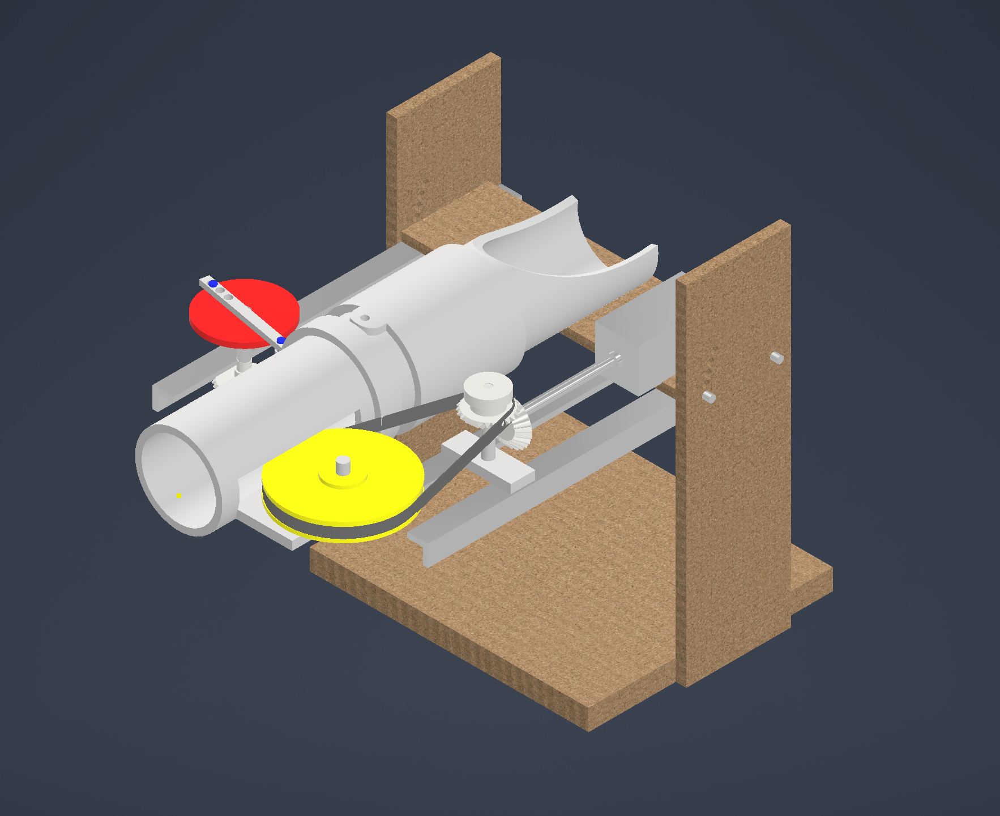

University collaborative project
Ping-Pong Ball Launcher
A launcher using two horizontal flywheels for propulsion, with controllable yaw and pitch. I designed most of the complex parts in CAD and computationally simulated the flywheel and steering mechanisms.
- Autodesk Inventor
- CAD
- Simulation
- Teamwork